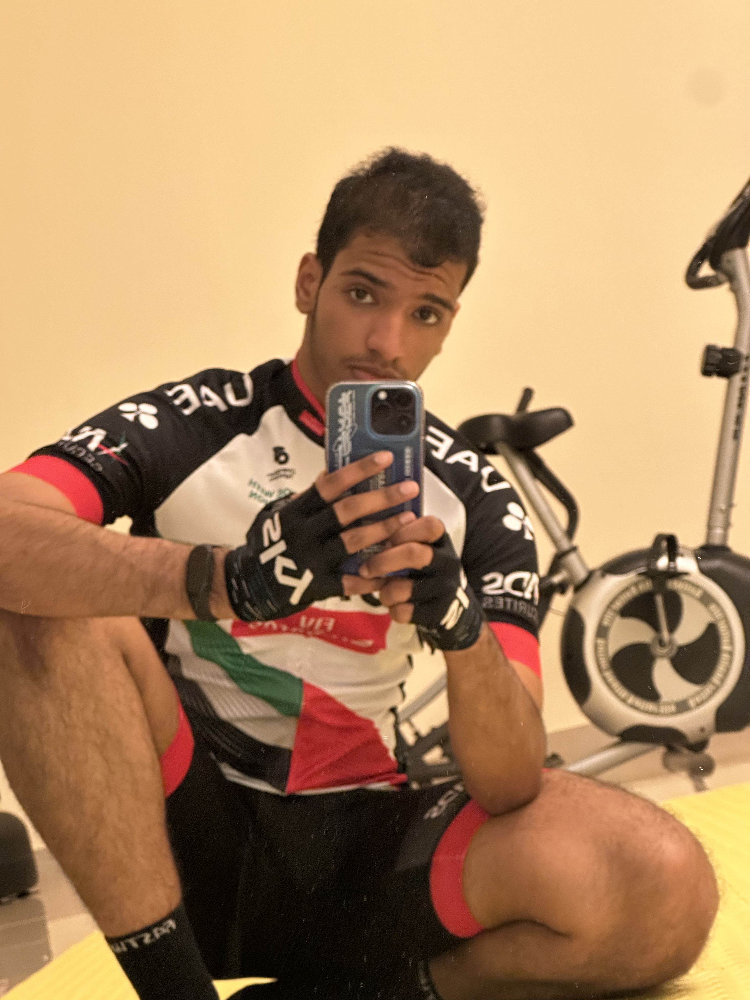
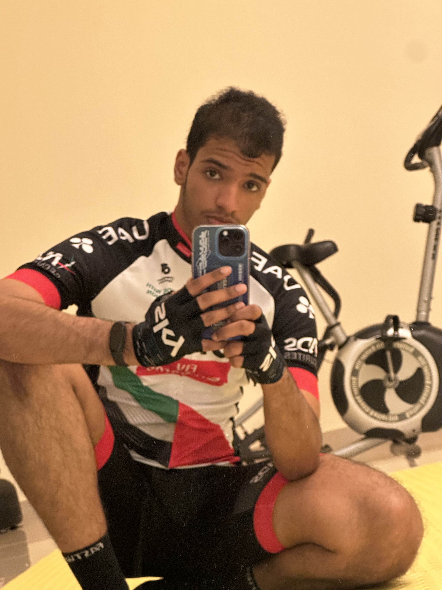

Welcome
Welcome to the about section! Here you will learn more about all the personal details one would want to know, to get to know me!
Where Am I From?
I'm from the UAE! For those who don't know, it stands for the United Arab Emirates. I live in the Abu Dhabi Emirate which is known for it's various monuments, as well as the plethora of business oppurtunities that can emerge! Aside from that, it's a place I call my home. My family, and friends mostly live here. I find myself always yearning to be back whenever I am seperated from my home!
 



Why Am I Studying Computer Science?


What Are My Interest?
I would say that I'm quite versatile in many things, so naturally I have many interest in a
plethora of things.
I particularly enjoy activities that involve some form of challenge, be it mental or physical!
Passing the time always seems easy when I play billiards, or videogames, even reading Japanese Manga.
Aside from that, I enjoy playing Tennis, Gokarting, as well as cycling! OOH, Wall-climbing as well!